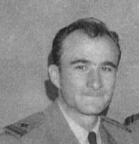
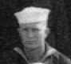

 
LT(Jg) Wilson Dickson
MOMM2/C Forsyth
1 June 1945, LSM 51 loaded an Australian mobile unit for a landing at
Brunei Bay, Borneo. We arrived on 10 June and started to Brown Beach 1,
our point of beaching. At 1252 we beached, but had to retract because the
water was too deep for the mobile unit to get ashore.
In our second attempt to get closer to the beach, we came in faster,
and about 15 seconds before we landed, something stopped the starboard
propeller. Since the propeller was connected to the engine through
a torque converter, the 1800 H.P. engine continued to run until we stopped
on the beach.
The rise and fall of the tide in this area was tremendous, and we intended
to retract as soon as the Australians disembarked. However, almost an hour
had been lost due to the two beachings, and the tide had already started
receding by the time we unloaded. We tried to reverse the starboard screw
in order to withdraw. It would not turn in either direction, and we were
unable to retract with the one engine and the stern anchor. The Engineering
Officer, Lt. (Jg) Wilson Dickson, USNR, came up with an ingenious idea
to examine the propeller. Using an air line and a gas mask he devised
an air helmet in order to dive under the water to check out the propeller.
He found that a 1 1/8 inch cable had wrapped around the shaft. Since this
was an oil field, the cable was probably a used drill line 1200 feet long.
Another dive and Mr Dickson discovered that the cable had wrapped around
the propeller so many times they would have to use a cutting torch
to remove it.
In the meantime, the tide was going out really fast, and since the generators
used sea water for cooling, it was not long before they had to be stopped,
putting the ship in total darkness with no fans to circulate the air below
deck. Added to our concerns, mortar and machine gun fire were being directed
toward the ships that were stuck on the beach. In addition there was a
Japanese air-strip within a mile of the beach.
With the tide approaching its lowest point, Mr. Dickson and MOMM
2/c Dozier P. Forsyth went over the side to cut the Cable. The water was
low enough that the upper half of the drive shaft was above the water.
Forsyth encountered a real problem when he began cutting the cable. Each
time a wave came in it would cool the cable thereby slowing the operation
quite a bit. He successfully cut all of the cable freeing the shaft to
turn. Spirits returned when we discovered the outboard bearing was not
damaged.
After the tide came in the next morning, we were able to get the generators
started and get the ship back to normal. Hats Off to LT (Jg) Wilson
Dickson and MOMM2/c Dozier P. Forsyth. A ship out of water is a sitting
duck.